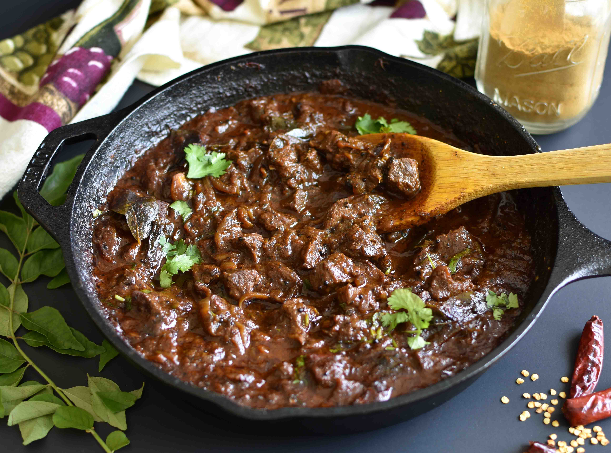
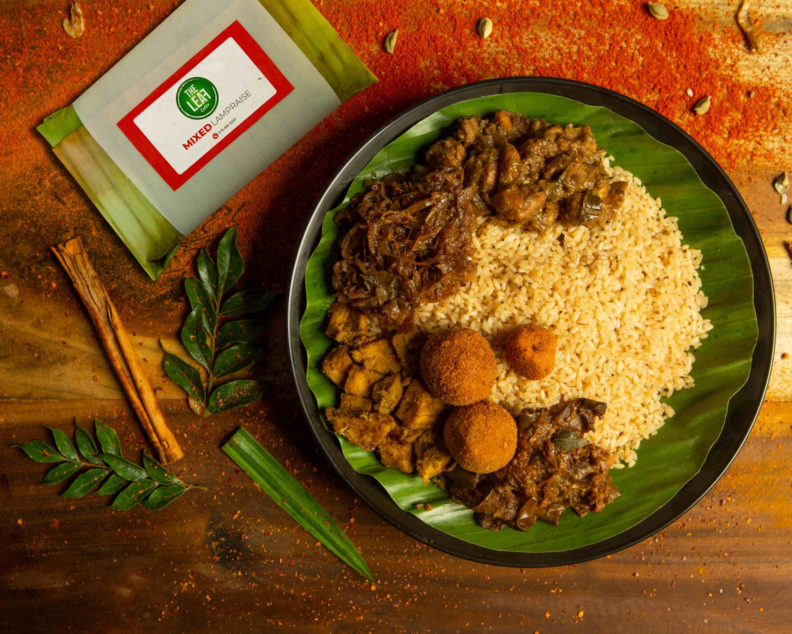
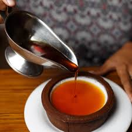

Vegetarian Recipes

Dhal Curry (Parippu)
Creamy lentil curry cooked with coconut milk and aromatic spices.
View Recipe →Jackfruit Curry (Polos)
Young jackfruit cooked in a rich blend of spices and coconut milk.
View Recipe →


Egg Hoppers (Appa)
Crispy bowl-shaped pancakes with a soft egg center, perfect for breakfast
View Recipe →
Milk Rice (Kiri Bath)
Creamy coconut milk rice, traditionally served on special occasions
View Recipe →
String Hoppers
Steamed rice flour noodles, a traditional Sri Lankan breakfast or dinner
View Recipe →

Meat & Poultry Recipes

Sri Lankan Chicken Curry
Aromatic chicken cooked in a blend of roasted spices and coconut milk.
View Recipe →





Fish Ambul Thiyal
Sour and spicy fish curry preserved with goraka, a Sri Lankan specialty
View Recipe →

Desserts & Sweets

